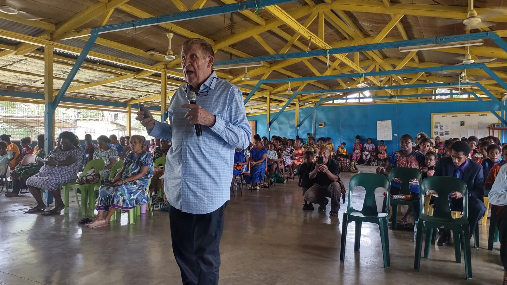

EPHOD Church Strengthening Seminars
Thirteen seminars that show you how to be a true disciple and disciple maker of Jesus Christ.
Herb and Karen Johnson spent more than ten years developing EPHOD, and the result is an extensive, practical course covering almost all of the foundational principles of the Christian life. The seminars have been presented in churches across Cambodia, the Philippines and Papua New Guinea, and on DVD — and now the whole course is here, on video, for anyone to take.
Each seminar comes with the same fill-in-the-blank handout used in the room: print it, watch, and write in the answers as they appear. Then talk it through with your small group — that is how the seminars are meant to be used. If you would like to bring the seminars to your church in person, get in touch.

How the course works
- 1WatchPrint the seminar’s handout, then watch the video — 16 minutes to about an hour — and fill in the blanks as the answers appear on screen.
- 2CheckA few questions after each seminar, taken straight from the handout, make sure the main points stuck. Try as often as you like.
- 3ContinueMark the seminar complete and the next one opens. The seminars are taken in order — each builds on the last.
- 4FinishComplete all thirteen and print your certificate. No account needed; progress is saved on your device.